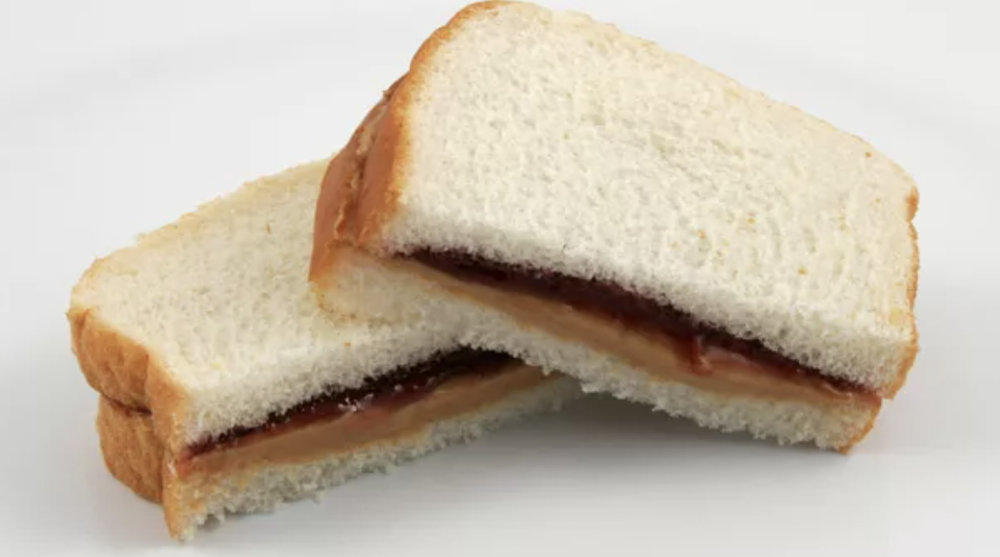

PB&J with Chips

Description
This is everything you could want, in a classic sandwhich.
Sweet, salty, nutty, and soft, this sandwhich packs a heck of a
punch! Choose whatever chips you like to add a nice crunchy twist,
this can be prepped in no time and satisfy the meanest of cravings.
Ingredients
- 2 peices of white bread
- 1 tbsp peanut butter
- 1 tbsp strawberry jam
- 1 handful of your choice of chips
Steps
- Spread peanutbutter over the face of 1 slice of bread
- On the second slice, spread the strawberry jam evenly
- Place the handful of chips on one slice of bread, and then lay the other on top to form a sandwhich
- Enjoy!